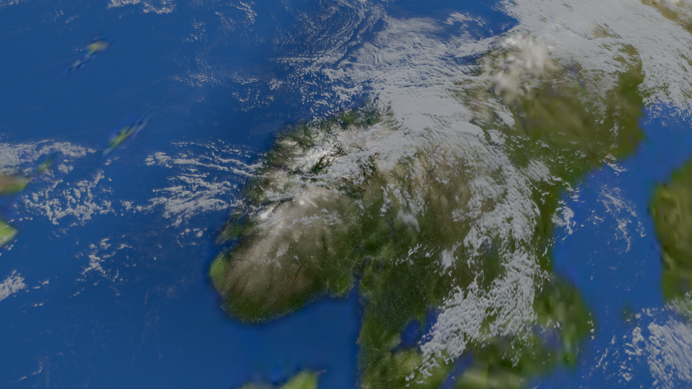
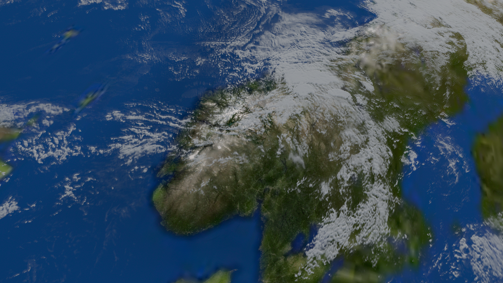
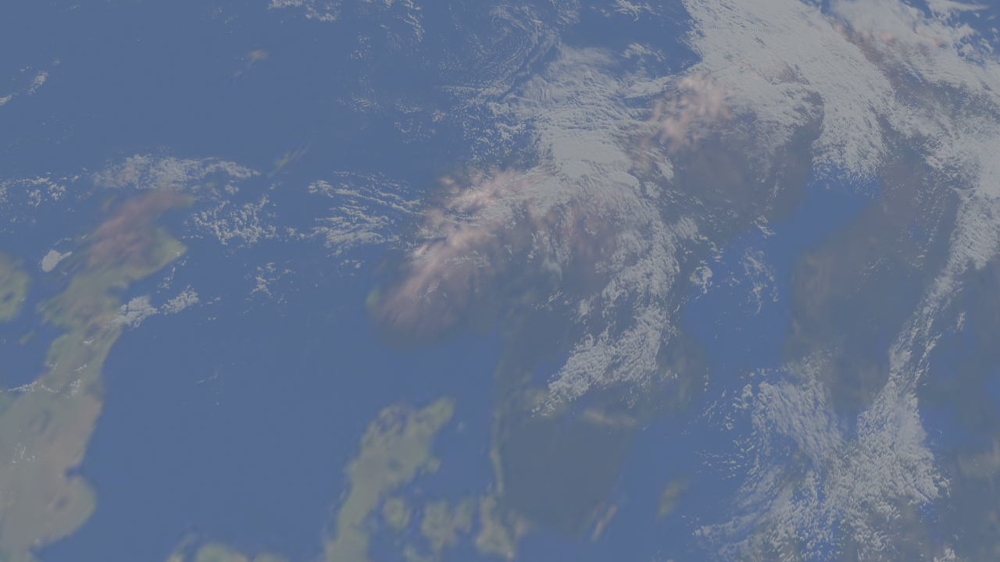
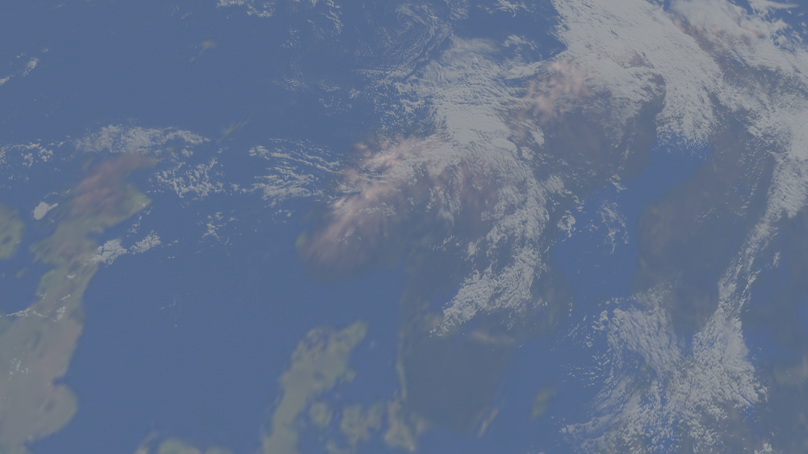
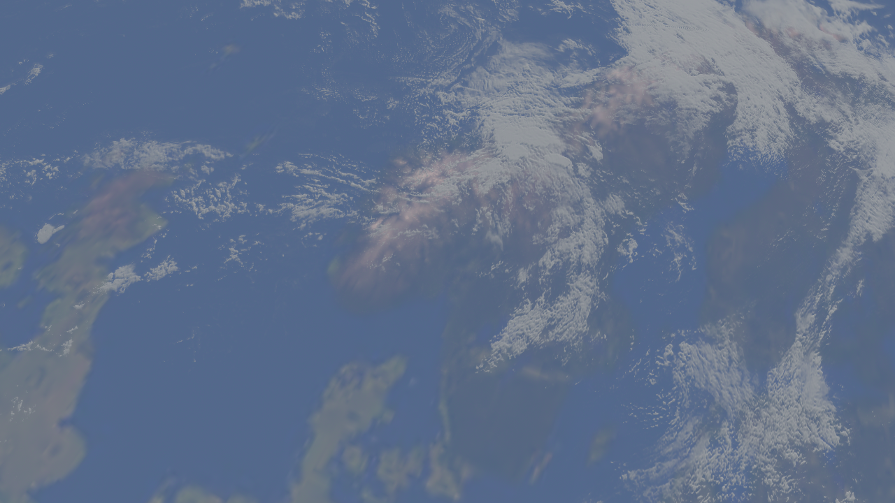
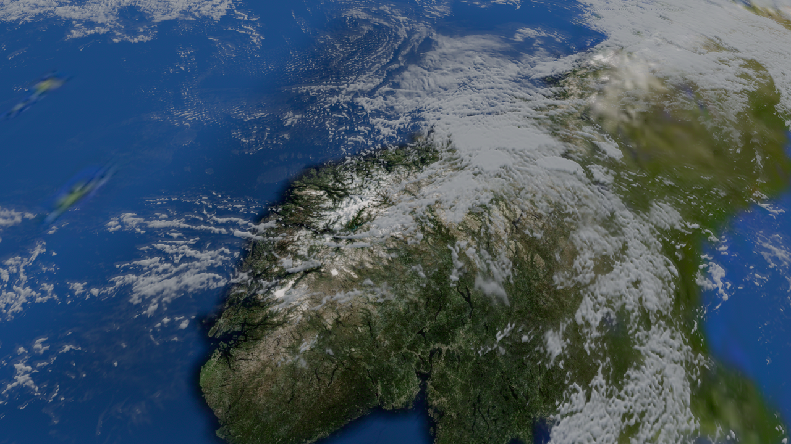
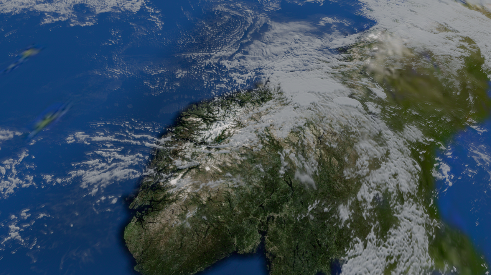
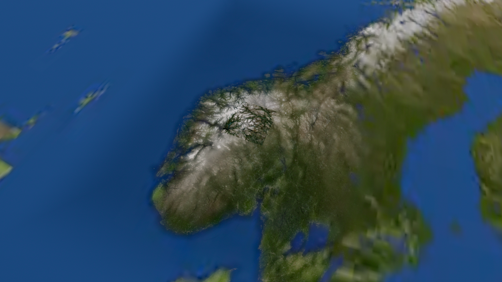
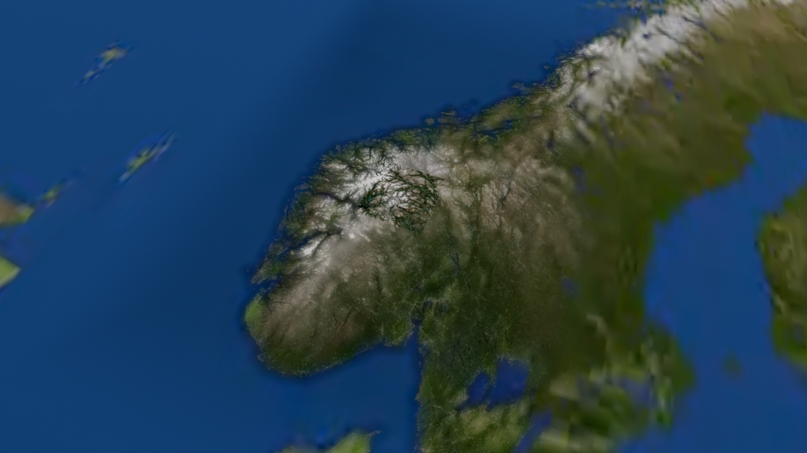
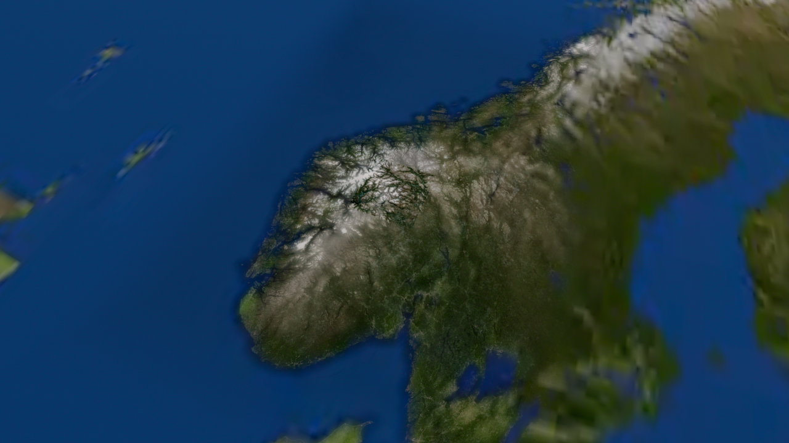

지도 원색 gain을 기존/80%/65%로 비교합니다. 화면 자체 밝기 비율은 아니며, 3D 지형·광원·구름을 유지합니다. 원형 지구에서는 기존 밝기이고 지역 진입 시 부드럽게 적용됩니다.
TUNE. 구름을 끄면 지도 명도 감소가 보이나, 구름이 있는 화면의 잔여 경계 개선은 제한적입니다. 완전한 경계 해결이나 자동 명도 정합으로 보지 않습니다.










